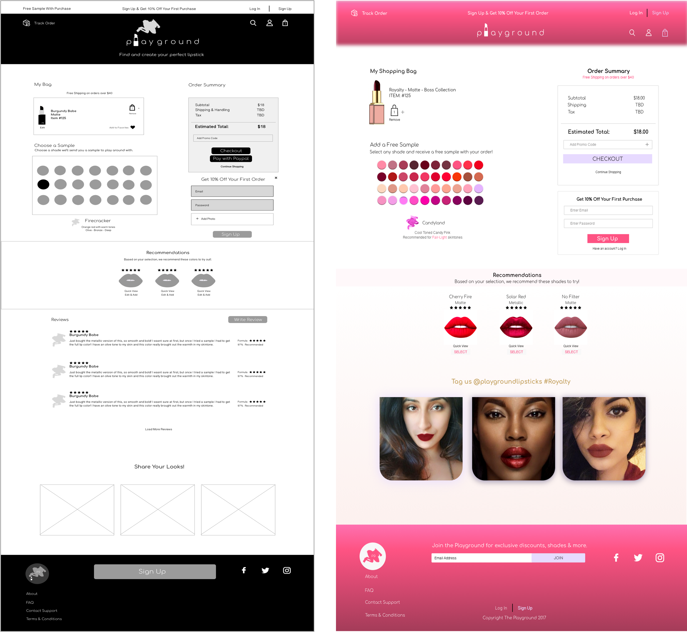
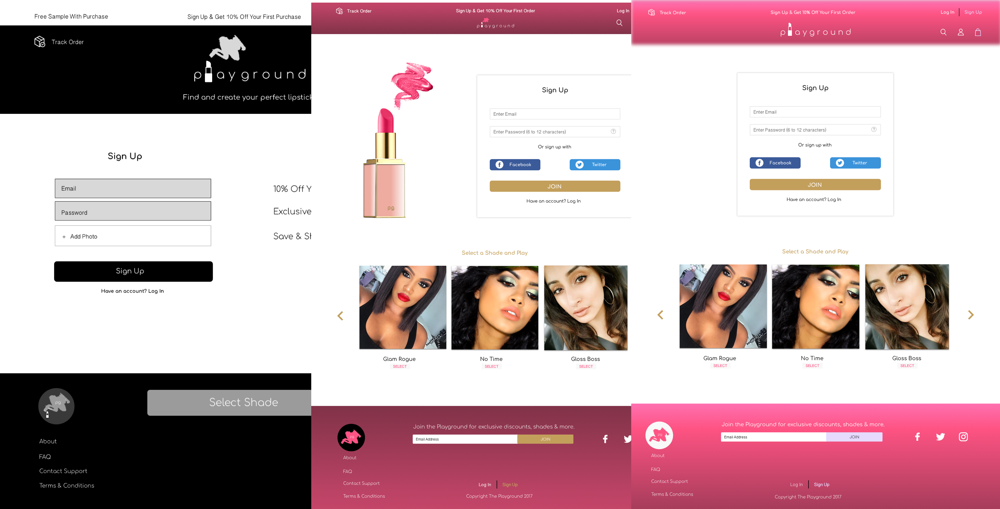
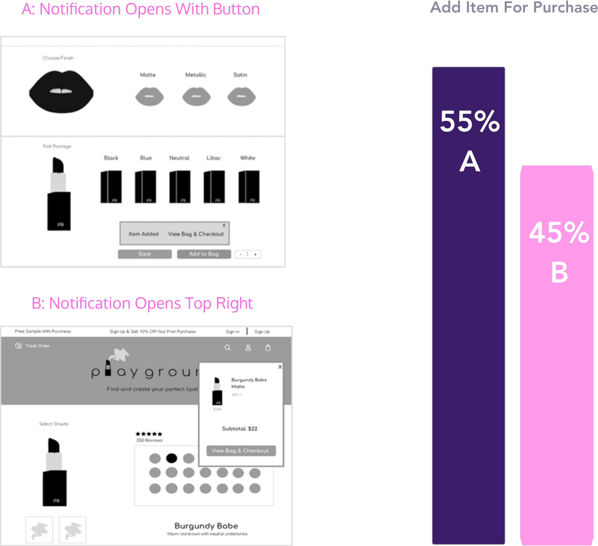

PLAYGROUND
Research | Branding | Wireframes | Prototype
At the Playground, you can find the perfect lipstick shade for your skintone. Each shade includes undertone details making it easy for anyone to color match.
VIEW PROTOTYPE
RESEARCH
To better understand the makeup user, I conduted a survey to learn more about the shopping habits of makeup consumers. With 50 respondants, below are the main findings:
90% Choose lipsticks as their favorite products
 60% Stated too many products to decide from
60% Stated too many products to decide from
85% Prefer Formula over brand or price
75% Stated products don't match their skintone
 90% Shop at Sephora in store or online
90% Shop at Sephora in store or online
 90% Purchase new products monthly
90% Purchase new products monthly
PERSONAS
Based on these survey results, it was clear many users loved lipsticks but were frustrated by finding them. To further understand this issue, I interviewed three potential users below, all of which had one common problem: color-matching.
COMPETITIVE ANALYSIS
After getting to know the users, a competitive analysis was completed to learn more about the current solutions already out there. Below are three brands that offer some form of lipstick customization and solve the user’s frustrations. Respondants were asked to review these competitors and let me know their thoughts on ease of use and color matching.

Users Liked
Emphasis on quality formula
Catered to beginners and experts

Users Disliked
Limited color selection
Routes to Sephora for purchases
Users Liked
Easy to use and customize
Custom finishes for any shade
Users Disliked
Limited color selection
No color matching details provided
Users Liked
Detailed ingredient information
Brand search to find exact shades
Users Disliked
Products are outdated
Difficult to navigate on the website
USER FLOWS
Based on research and analysis, users clearly showed a need for unique lipsticks that matched their skintone,
without feeling confused when browsing. Keeping this in mind, I created a three step process for
selecting a lipstick to ensure ease when browsing and checking out.
Create Lipstick & Add to Bag
Review Order-Checkout & Place Order
BRANDING
When creating the Playground identity, it was important to incorporate lipstick formula and the shopping habits of users.
When brainstorming, I decided to use my own liptstick products to help inspire potential logos. The term “swatch” and “play” stood out as they conveyed a fun and common way to explore makeup.
Users will swatch lipsticks to see if it matches their skintone and play with different shades. Thus, the name Playground resulted as the MVP for this design.
Using the swatches I created, lipstick images and the name Playground, I sketched the final logo below based on user feedback. Users understood the product right away with a lipstick icon, however users also enjoyed the swatch icon to emphasize formula. I created a combo of the two logos as the final visual part of the brand identity.
WIREFRAMES
Before applying any visual color, I sketched and created wireframes so users can actually test out the Playground. I spoke with users to understand what they expect the application to do and how they prefered to interact with it.
Taking this user feedback, I applied these changes throughout the wireframe process. I first started with a very different layout of the lipstick shades, however this continuously changed to ensure easy browsing for users.


USER TESTING
I conducted various preference and navigation tests to ensure simple page flows that make sense to the user.
Each test was disributed via email, social media, and other online forums as well as in person interviews.
With a focus on customization, check out, sign up and writing a review, below are the results of some user tests:
80% of users voted for Option B,
using images to choose their lipstick finish as oppose to buttons. Having a visual
idea of what the lipstick finish will look like helps the user create a more
personalized lipstick.

When adding a lipstick to their shopping cart/bag, users were asked if they prefer
to be notified on the top right vs. above the Add To Bag button. Although 55% choose option A,
I found the responses were not adaquete enough or I wanted to know more information.
I did a secondary user test to find out if having two “Add to Bag” buttons would work
better for the user, with a notification above the button regardless. This prevents
the user from scrolling back up and they can add items in various places, creating a
better shopping experience
Sign Up & Checkout Feedback:
- Users liked less pushes to sign up
- After signing up, no clear indication of sign up
- Users preferred sign-up process at checkout or after purchase
Write Review Feedback:
- Users requested reviewer's name on reviews
- Users preferred recommendations with reviews
- 'Write a Review' modal window instead of a seperate page
What I learned from these user tests was how to implement changes I wasn't expecting such as
less sign up pushes or the shopping cart highlighted in multiple places. The results of these
user tests helped reduce pain points and engage users more in the shade
selection process.
PROTOTYPE
After continous revisions, I designed the final prototype below which was given to users to interact with.
Overall, users enjoyed their experience at the Playground and were able to browse lipsticks and checkout
easily. The Playground helps solve a real life problem for many women of different skintones, including myself,
who want to feel confident and wear shades that work for them. There is definitly a shift in the beauty industry
as more products come out catered to diverse women. To further develop this product, I will continue refining
the design and create a smoother user experience. You can view my full visual prototype by clicking the button below:
VIEW FINAL DESIGN